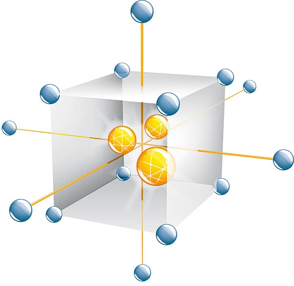

MODUNIVAR SetUp
Glossario minimo
1
Piani Fattoriali completi
1.1
Piani fattoriali completi
\(2^k\)
2
Piani Fattoriali Frazionari
2.1
Esempio: confusioni
2.2
Esempio: studio dei fattori dell’estrazione liquido-liquido
3
Piani di Plackett Burman
3.1
Esempio: confusioni
3.2
Esempio Elvitegravir
4
Central Composite Design
4.1
Esempio
5
Piani D-ottimali
5.1
Algoritmo di Federov
5.2
Esempio: proprietà di un adesivo
5.3
Esempio: riparazione di una matrice
6
Piani per miscele
6.1
Esempio: ACE
6.2
Piani per miscele D-ottimali
6.2.1
Esempio: Polveron
Bibliografia
Dispense sulla progettazione degli esperimenti
Dispense sulla progettazione degli esperimenti
Design of Experiments, DoE
Giorgio Marrubini e Camillo Melzi
